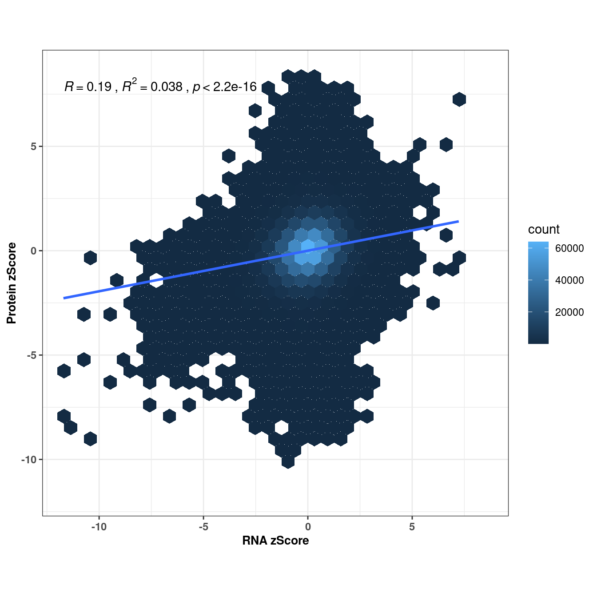
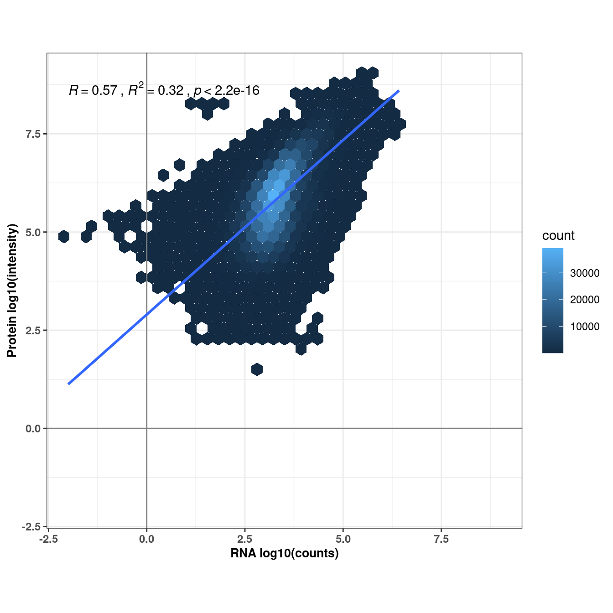
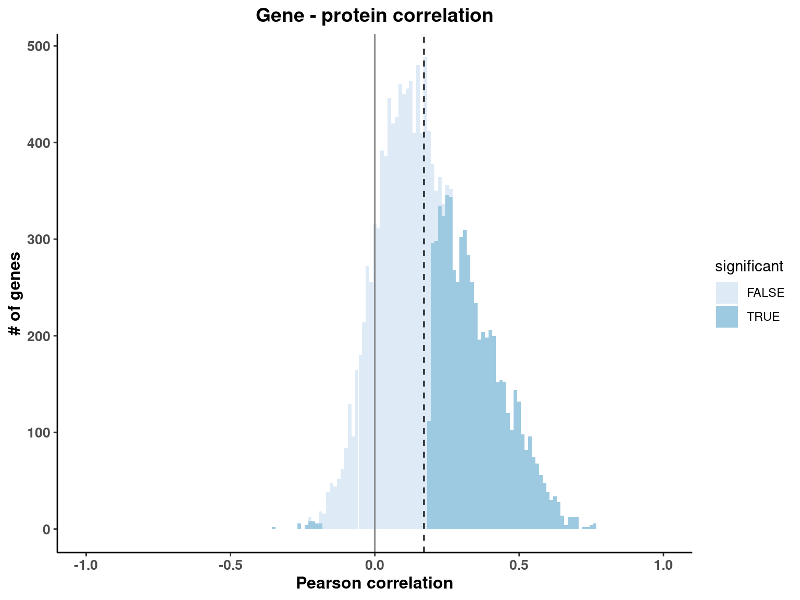
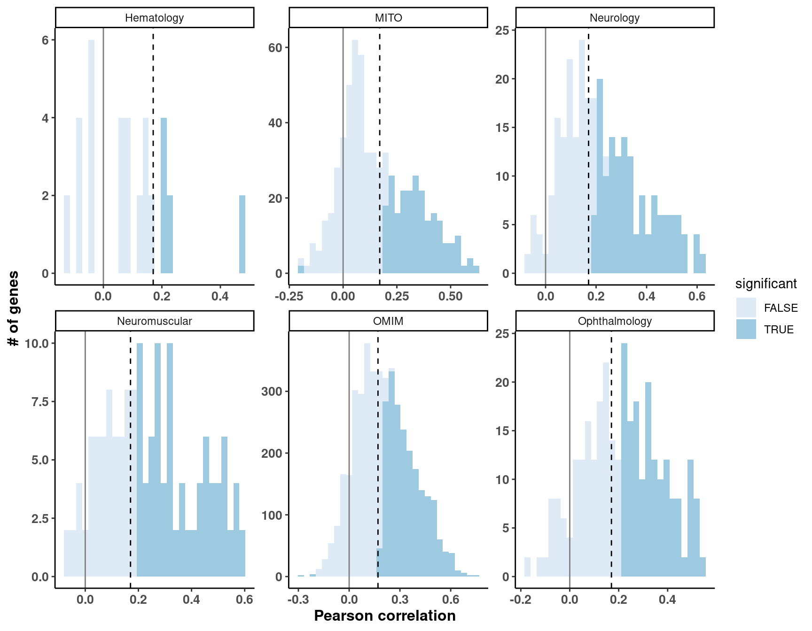
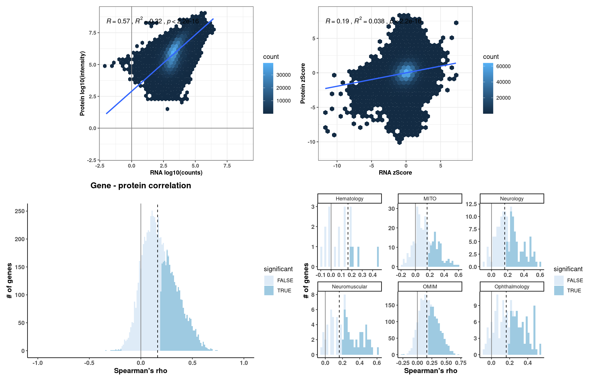
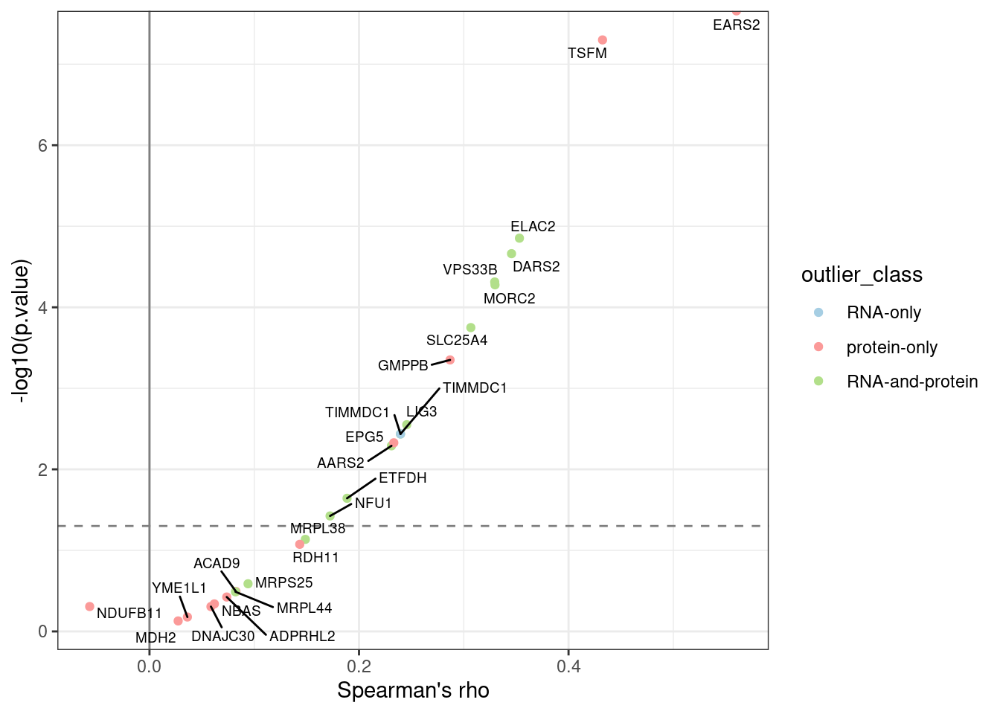
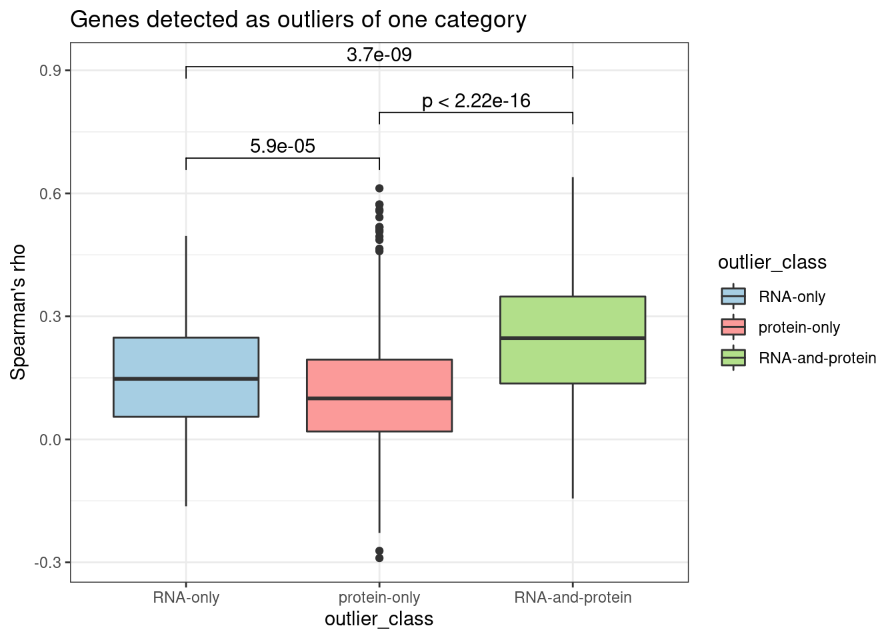

# Load plotting config and functions
source('src/config.R')
# READ ANNOTATION
# sa <- fread('/s/project/mitoMultiOmics/multiOMICs_integration/raw_data/proteomics_annotation.tsv')
sa <- fread(snakemake@input$sample_annotation)
sa <- sa[USE_FOR_PROTEOMICS_PAPER == T]
# Load disease genes table
# dis_genes <- fread('/s/project/mitoMultiOmics/multiOMICs_integration/datasets/disease_genes.tsv')
dis_genes <- fread(snakemake@input$disease_genes)
# Read integrated omics file
# rp <- readRDS("/s/project/mitoMultiOmics/multiOMICs_integration/processed_data/integration/patient_omics.RDS") %>% as.data.table()
rp <- readRDS(snakemake@input$patient_omics) %>% as.data.table()
rp <- rp[ gene_detected == "RNA and protein detected"]
##################################################
Z-scores
range <- c(rp$RNA_ZSCORE, rp$PROTEIN_ZSCORE)
ggplot(rp, aes(RNA_ZSCORE, PROTEIN_ZSCORE) )+
geom_hex( )+
stat_cor( aes(label = paste(..r.label.. , ..rr.label.., ..p.label.., sep = "~`,`~")), method = "pearson", na.rm = T)+
geom_smooth(method = lm, se = FALSE)+
coord_fixed( xlim = c( min(range , na.rm = T) , max( range , na.rm = T) ),
ylim = c( min(range , na.rm = T), max( range , na.rm = T) )) +
xlab("RNA zScore") +
ylab("Protein zScore") +
theme_bw()+
theme(plot.title = element_text(size=14, hjust = 0.5, face="bold"),
axis.title.x= element_text( size=10, margin = NULL,face="bold"),
axis.title.y= element_text( size=10, margin = NULL,face="bold"),
axis.text.x= element_text( size=9, margin = NULL,face="bold"),
axis.text.y= element_text( size=9, margin = NULL,face="bold"))

##################################################
log2(Fold change)
rp$RNA_LOG2FC <- log2(rp$RNA_FC)
rp$PROTEIN_LOG2FC <- log2(rp$PROTEIN_FC)
rpx <- rp[!is.na(RNA_LOG2FC ) & !is.na(PROTEIN_LOG2FC )]
rpx <- rp[!is.infinite(RNA_LOG2FC ) & !is.infinite(PROTEIN_LOG2FC )]
range <- c(rpx$RNA_LOG2FC , rpx$PROTEIN_LOG2FC)
ggplot(rpx, aes(RNA_LOG2FC, PROTEIN_LOG2FC ) )+
geom_hex( )+
geom_vline(xintercept = 0, color = "grey50") +
geom_hline(yintercept = 0, color = "grey50") +
stat_cor( aes(label = paste(..r.label.. , ..rr.label.., ..p.label.., sep = "~`,`~")), method = "pearson", na.rm = T)+
geom_smooth(method = lm, se = FALSE)+
coord_fixed( xlim = c( min(range , na.rm = T) , max( range , na.rm = T) ),
ylim = c( min(range , na.rm = T), max( range , na.rm = T) )) +
xlab("RNA log2(fold change)") +
ylab("Protein log2(fold change)") +
theme_bw()+
theme(plot.title = element_text(size=14, hjust = 0.5, face="bold"),
axis.title.x= element_text( size=10, margin = NULL,face="bold"),
axis.title.y= element_text( size=10, margin = NULL,face="bold"),
axis.text.x= element_text( size=9, margin = NULL,face="bold"),
axis.text.y= element_text( size=9, margin = NULL,face="bold"))
##################################################
Abundance
rp$log10_RNA_counts <- log10(rp$normcounts)
rp$log10_Protein_intensity <- log10(rp$PROTEIN_INT)
rpx <- rp[!is.na(log10_RNA_counts ) & !is.na(log10_Protein_intensity )]
rpx <- rp[!is.infinite(log10_RNA_counts ) & !is.infinite(log10_Protein_intensity )]
range <- c(rpx$log10_RNA_counts , rpx$log10_Protein_intensity)
ggplot(rpx, aes(log10_RNA_counts, log10_Protein_intensity ) )+
geom_hex( )+
geom_vline(xintercept = 0, color = "grey50") +
geom_hline(yintercept = 0, color = "grey50") +
stat_cor( aes(label = paste(..r.label.. , ..rr.label.., ..p.label.., sep = "~`,`~")), method = "pearson", na.rm = T)+
geom_smooth(method = lm, se = FALSE)+
coord_fixed( xlim = c( min(range , na.rm = T) , max( range , na.rm = T) ),
ylim = c( min(range , na.rm = T), max( range , na.rm = T) )) +
xlab("RNA log10(counts)") +
ylab("Protein log10(intensity)") +
theme_bw()+
theme(plot.title = element_text(size=14, hjust = 0.5, face="bold"),
axis.title.x= element_text( size=10, margin = NULL,face="bold"),
axis.title.y= element_text( size=10, margin = NULL,face="bold"),
axis.text.x= element_text( size=9, margin = NULL,face="bold"),
axis.text.y= element_text( size=9, margin = NULL,face="bold"))

##################################################
Gene - protein correlation Pearson
gp_p <- as.data.table(rpx[ , cor.test(log10_RNA_counts, log10_Protein_intensity, method="pearson")[-2], by= geneID])
setnames(gp_p, "estimate", "cor" )
med <- median(gp_p$cor)
gp_p[ , padj := p.adjust(p.value, method = "BH")]
gp_p[, significant := padj < 0.05]
ggplot(gp_p, aes(cor, fill = significant))+
geom_histogram(bins = 90)+
theme_classic()+
geom_vline(xintercept = 0, color = "grey50") +
geom_vline(xintercept = med, linetype = "dashed") +
scale_fill_brewer()+
coord_cartesian( xlim = c( -1 , 1 )) +
ylab("# of genes") +
xlab("Pearson correlation") +
ggtitle("Gene - protein correlation") +
theme(plot.title = element_text(size=14, hjust = 0.5, face="bold"),
axis.title.x= element_text( size=12, margin = NULL,face="bold"),
axis.title.y= element_text( size=12, margin = NULL,face="bold"),
axis.text.x= element_text( size=10, margin = NULL,face="bold"),
axis.text.y= element_text( size=10, margin = NULL,face="bold"))

Disease genes
gp_p_dg <- merge(dis_genes , gp_p, by = "geneID")
ggplot(gp_p_dg, aes(cor, fill = significant))+
geom_histogram()+
theme_classic()+
geom_vline(xintercept = 0, color = "grey50") +
geom_vline(xintercept = med, linetype = "dashed") +
scale_fill_brewer()+
#coord_cartesian( xlim = c( -1 , 1 )) +
ylab("# of genes") +
xlab("Pearson correlation") +
facet_wrap( ~DISEASE, scales = "free")+
theme(plot.title = element_text(size=14, hjust = 0.5, face="bold"),
axis.title.x= element_text( size=12, margin = NULL,face="bold"),
axis.title.y= element_text( size=12, margin = NULL,face="bold"),
axis.text.x= element_text( size=10, margin = NULL,face="bold"),
axis.text.y= element_text( size=10, margin = NULL,face="bold"))

##################################################
Gene - protein correlation Spearman
gp_s <- as.data.table(rpx[ , cor.test(log10_RNA_counts, log10_Protein_intensity, method="spearman")[-2], by= geneID])
setnames(gp_s, "estimate", "rho" )
med <- median(gp_s$rho)
gp_s[ , padj := p.adjust(p.value, method = "BH")]
gp_s[, significant := padj < 0.05]
ggplot(gp_s, aes(rho, fill = significant))+
geom_histogram(bins = 90)+
theme_classic()+
geom_vline(xintercept = 0, color = "grey50") +
geom_vline(xintercept = med, linetype = "dashed") +
scale_fill_brewer()+
coord_cartesian( xlim = c( -1 , 1 )) +
ylab("# of genes") +
xlab("Spearman's rho") +
ggtitle("Gene - protein correlation") +
theme(plot.title = element_text(size=14, hjust = 0.5, face="bold"),
axis.title.x= element_text( size=12, margin = NULL,face="bold"),
axis.title.y= element_text( size=12, margin = NULL,face="bold"),
axis.text.x= element_text( size=10, margin = NULL,face="bold"),
axis.text.y= element_text( size=10, margin = NULL,face="bold"))
Disease genes
gp_s_dg <- merge(dis_genes , gp_s, by = "geneID")
ggplot(gp_s_dg, aes(rho, fill = significant))+
geom_histogram()+
theme_classic()+
geom_vline(xintercept = 0, color = "grey50") +
geom_vline(xintercept = med, linetype = "dashed") +
scale_fill_brewer()+
#coord_cartesian( xlim = c( -1 , 1 )) +
ylab("# of genes") +
xlab("Spearman's rho") +
facet_wrap( ~DISEASE, scales = "free")+
theme(plot.title = element_text(size=14, hjust = 0.5, face="bold"),
axis.title.x= element_text( size=12, margin = NULL,face="bold"),
axis.title.y= element_text( size=12, margin = NULL,face="bold"),
axis.text.x= element_text( size=10, margin = NULL,face="bold"),
axis.text.y= element_text( size=10, margin = NULL,face="bold"))

Causal genes
causal_genes <- gp_s[ geneID %in% sa[CATEGORY %in% c("I", "IIa", "III")]$KNOWN_MUTATION, c("geneID", "rho", "p.value", "padj", "significant")]
annot <- rp[causal_gene == T , c("geneID", "outlier_class")]
causal_genes <- merge(causal_genes, annot, by = "geneID")
ggplot(causal_genes[ outlier_class != "non_outlier"], aes(rho, -log10(p.value)))+
geom_point( aes(color = outlier_class ) )+
geom_vline(xintercept = 0, color = "grey50") +
geom_hline(yintercept = -log10(0.05), color = "grey50", linetype = "dashed") +
geom_text_repel(aes(label = geneID), size = 2.5)+
scale_color_manual(breaks = c("non_outlier","RNA-only", "protein-only", "RNA-and-protein"),
values = outlier_colors)+
xlab("Spearman's rho") +
theme_bw()

Genes detected as outliers
annot <- rp[outlier_class != "non_outlier" , c("geneID", "outlier_class")]
consider only genes, that were detected as outliers of one class
annot <- annot[ !( geneID %in% annot[duplicated(geneID) ]$geneID ) ]
outlier_genes <- merge(gp_s, annot, by = "geneID")
outlier_genes$outlier_class <- factor(outlier_genes$outlier_class , levels = c("RNA-only","protein-only", "RNA-and-protein"))
ggplot(outlier_genes, aes(outlier_class, rho, fill = outlier_class))+
geom_boxplot()+
scale_fill_manual(breaks = c("non_outlier","RNA-only","protein-only", "RNA-and-protein"),
values = outlier_colors)+
theme_bw() +
ylab("Spearman's rho") +
stat_compare_means(comparisons = list(c("RNA-only" ,"protein-only" ),
c("protein-only", "RNA-and-protein"),
c("RNA-only", "RNA-and-protein") ) )+
#stat_compare_means(label.y = 1.2) +
ggtitle("Genes detected as outliers of one category")

IyctLS0KIycgdGl0bGU6IFJOQSB2cyBwcm90ZWluIGNvcnJlbGF0aW9uICAKIycgYXV0aG9yOiBzbWlybm92ZAojJyB3YjoKIycgIGlucHV0OgojJyAgLSBzYW1wbGVfYW5ub3RhdGlvbjogJ2BzbSBjb25maWdbIkFOTk9UQVRJT04iXWAnCiMnICAtIGRpc2Vhc2VfZ2VuZXM6ICdgc20gY29uZmlnWyJEQVRBU0VUUyJdICsgIi9kaXNlYXNlX2dlbmVzLnRzdiJgJwojJyAgLSBwYXRpZW50X29taWNzOiAnYHNtIGNvbmZpZ1siUFJPQ19EQVRBIl0gKyAiL2ludGVncmF0aW9uL3BhdGllbnRfb21pY3MuUkRTImAnCiMnICBvdXRwdXQ6CiMnIG91dHB1dDogCiMnICAgaHRtbF9kb2N1bWVudDoKIycgICAgY29kZV9mb2xkaW5nOiBoaWRlCiMnICAgIGNvZGVfZG93bmxvYWQ6IFRSVUUKIyctLS0KCiMgTG9hZCBwbG90dGluZyBjb25maWcgYW5kIGZ1bmN0aW9ucwpzb3VyY2UoJ3NyYy9jb25maWcuUicpCgojIFJFQUQgQU5OT1RBVElPTgojIHNhIDwtIGZyZWFkKCcvcy9wcm9qZWN0L21pdG9NdWx0aU9taWNzL211bHRpT01JQ3NfaW50ZWdyYXRpb24vcmF3X2RhdGEvcHJvdGVvbWljc19hbm5vdGF0aW9uLnRzdicpCnNhIDwtIGZyZWFkKHNuYWtlbWFrZUBpbnB1dCRzYW1wbGVfYW5ub3RhdGlvbikKc2EgPC0gc2FbVVNFX0ZPUl9QUk9URU9NSUNTX1BBUEVSID09IFRdCgoKCiMgTG9hZCBkaXNlYXNlIGdlbmVzIHRhYmxlCiMgZGlzX2dlbmVzIDwtIGZyZWFkKCcvcy9wcm9qZWN0L21pdG9NdWx0aU9taWNzL211bHRpT01JQ3NfaW50ZWdyYXRpb24vZGF0YXNldHMvZGlzZWFzZV9nZW5lcy50c3YnKQpkaXNfZ2VuZXMgPC0gZnJlYWQoc25ha2VtYWtlQGlucHV0JGRpc2Vhc2VfZ2VuZXMpCgoKIyBSZWFkIGludGVncmF0ZWQgb21pY3MgZmlsZSAKIyBycCA8LSByZWFkUkRTKCIvcy9wcm9qZWN0L21pdG9NdWx0aU9taWNzL211bHRpT01JQ3NfaW50ZWdyYXRpb24vcHJvY2Vzc2VkX2RhdGEvaW50ZWdyYXRpb24vcGF0aWVudF9vbWljcy5SRFMiKSAlPiUgYXMuZGF0YS50YWJsZSgpCnJwIDwtIHJlYWRSRFMoc25ha2VtYWtlQGlucHV0JHBhdGllbnRfb21pY3MpICU+JSBhcy5kYXRhLnRhYmxlKCkKcnAgPC0gcnBbIGdlbmVfZGV0ZWN0ZWQgPT0gIlJOQSBhbmQgcHJvdGVpbiBkZXRlY3RlZCJdCgoKIyMjIyMjIyMjIyMjIyMjIyMjIyMjIyMjIyMjIyMjIyMjIyMjIyMjIyMjIyMjIyMjIyMKCiMnICMgWi1zY29yZXMKcmFuZ2UgPC0gYyhycCRSTkFfWlNDT1JFLCBycCRQUk9URUlOX1pTQ09SRSkKIysgZmlnLndpZHRoPTcsIGZpZy5oZWlnaHQ9NwpnZ3Bsb3QocnAsIGFlcyhSTkFfWlNDT1JFLCBQUk9URUlOX1pTQ09SRSkgKSsKICBnZW9tX2hleCggKSsKICBzdGF0X2NvciggYWVzKGxhYmVsID0gcGFzdGUoLi5yLmxhYmVsLi4gLCAuLnJyLmxhYmVsLi4sIC4ucC5sYWJlbC4uLCBzZXAgPSAifmAsYH4iKSksIG1ldGhvZCA9ICJwZWFyc29uIiwgbmEucm0gPSBUKSsKICBnZW9tX3Ntb290aChtZXRob2QgPSBsbSwgc2UgPSBGQUxTRSkrCiAgY29vcmRfZml4ZWQoIHhsaW0gPSBjKCBtaW4ocmFuZ2UgLCBuYS5ybSA9IFQpICwgbWF4KCByYW5nZSAgLCBuYS5ybSA9IFQpICksICAKICAgICAgICAgICAgICAgeWxpbSA9IGMoIG1pbihyYW5nZSAsIG5hLnJtID0gVCksICBtYXgoIHJhbmdlICAsIG5hLnJtID0gVCkgICkpICsgCiAgeGxhYigiUk5BIHpTY29yZSIpICsgCiAgeWxhYigiUHJvdGVpbiB6U2NvcmUiKSArCiAgdGhlbWVfYncoKSsKICB0aGVtZShwbG90LnRpdGxlID0gZWxlbWVudF90ZXh0KHNpemU9MTQsIGhqdXN0ID0gMC41LCBmYWNlPSJib2xkIiksCiAgICAgICAgYXhpcy50aXRsZS54PSBlbGVtZW50X3RleHQoIHNpemU9MTAsIG1hcmdpbiA9IE5VTEwsZmFjZT0iYm9sZCIpLAogICAgICAgIGF4aXMudGl0bGUueT0gZWxlbWVudF90ZXh0KCBzaXplPTEwLCBtYXJnaW4gPSBOVUxMLGZhY2U9ImJvbGQiKSwKICAgICAgICBheGlzLnRleHQueD0gZWxlbWVudF90ZXh0KCBzaXplPTksIG1hcmdpbiA9IE5VTEwsZmFjZT0iYm9sZCIpLAogICAgICAgIGF4aXMudGV4dC55PSBlbGVtZW50X3RleHQoIHNpemU9OSwgbWFyZ2luID0gTlVMTCxmYWNlPSJib2xkIikpCiMjIyMjIyMjIyMjIyMjIyMjIyMjIyMjIyMjIyMjIyMjIyMjIyMjIyMjIyMjIyMjIyMjCgojJyAjIGxvZzIoRm9sZCBjaGFuZ2UpCnJwJFJOQV9MT0cyRkMgPC0gbG9nMihycCRSTkFfRkMpCnJwJFBST1RFSU5fTE9HMkZDIDwtIGxvZzIocnAkUFJPVEVJTl9GQykKCnJweCA8LSBycFshaXMubmEoUk5BX0xPRzJGQyApICYgIWlzLm5hKFBST1RFSU5fTE9HMkZDICldCnJweCA8LSBycFshaXMuaW5maW5pdGUoUk5BX0xPRzJGQyApICYgIWlzLmluZmluaXRlKFBST1RFSU5fTE9HMkZDICldCgpyYW5nZSA8LSBjKHJweCRSTkFfTE9HMkZDICwgcnB4JFBST1RFSU5fTE9HMkZDKQojKyBmaWcud2lkdGg9NywgZmlnLmhlaWdodD03CmdncGxvdChycHgsIGFlcyhSTkFfTE9HMkZDLCBQUk9URUlOX0xPRzJGQyApICkrCiAgZ2VvbV9oZXgoICkrCiAgZ2VvbV92bGluZSh4aW50ZXJjZXB0ID0gMCwgY29sb3IgPSAiZ3JleTUwIikgKwogIGdlb21faGxpbmUoeWludGVyY2VwdCA9IDAsIGNvbG9yID0gImdyZXk1MCIpICsKICBzdGF0X2NvciggYWVzKGxhYmVsID0gcGFzdGUoLi5yLmxhYmVsLi4gLCAuLnJyLmxhYmVsLi4sIC4ucC5sYWJlbC4uLCBzZXAgPSAifmAsYH4iKSksIG1ldGhvZCA9ICJwZWFyc29uIiwgbmEucm0gPSBUKSsKICBnZW9tX3Ntb290aChtZXRob2QgPSBsbSwgc2UgPSBGQUxTRSkrCiAgY29vcmRfZml4ZWQoIHhsaW0gPSBjKCBtaW4ocmFuZ2UgLCBuYS5ybSA9IFQpICwgbWF4KCByYW5nZSAgLCBuYS5ybSA9IFQpICksICAKICAgICAgICAgICAgICAgeWxpbSA9IGMoIG1pbihyYW5nZSAsIG5hLnJtID0gVCksICBtYXgoIHJhbmdlICAsIG5hLnJtID0gVCkgICkpICsgCiAgeGxhYigiUk5BIGxvZzIoZm9sZCBjaGFuZ2UpIikgKyAKICB5bGFiKCJQcm90ZWluIGxvZzIoZm9sZCBjaGFuZ2UpIikgKwogIHRoZW1lX2J3KCkrCiAgdGhlbWUocGxvdC50aXRsZSA9IGVsZW1lbnRfdGV4dChzaXplPTE0LCBoanVzdCA9IDAuNSwgZmFjZT0iYm9sZCIpLAogICAgICAgIGF4aXMudGl0bGUueD0gZWxlbWVudF90ZXh0KCBzaXplPTEwLCBtYXJnaW4gPSBOVUxMLGZhY2U9ImJvbGQiKSwKICAgICAgICBheGlzLnRpdGxlLnk9IGVsZW1lbnRfdGV4dCggc2l6ZT0xMCwgbWFyZ2luID0gTlVMTCxmYWNlPSJib2xkIiksCiAgICAgICAgYXhpcy50ZXh0Lng9IGVsZW1lbnRfdGV4dCggc2l6ZT05LCBtYXJnaW4gPSBOVUxMLGZhY2U9ImJvbGQiKSwKICAgICAgICBheGlzLnRleHQueT0gZWxlbWVudF90ZXh0KCBzaXplPTksIG1hcmdpbiA9IE5VTEwsZmFjZT0iYm9sZCIpKQoKIyMjIyMjIyMjIyMjIyMjIyMjIyMjIyMjIyMjIyMjIyMjIyMjIyMjIyMjIyMjIyMjIyMKIycgIyBBYnVuZGFuY2UKcnAkbG9nMTBfUk5BX2NvdW50cyA8LSBsb2cxMChycCRub3JtY291bnRzKQpycCRsb2cxMF9Qcm90ZWluX2ludGVuc2l0eSA8LSBsb2cxMChycCRQUk9URUlOX0lOVCkKCnJweCA8LSBycFshaXMubmEobG9nMTBfUk5BX2NvdW50cyApICYgIWlzLm5hKGxvZzEwX1Byb3RlaW5faW50ZW5zaXR5ICldCnJweCA8LSBycFshaXMuaW5maW5pdGUobG9nMTBfUk5BX2NvdW50cyApICYgIWlzLmluZmluaXRlKGxvZzEwX1Byb3RlaW5faW50ZW5zaXR5ICldCgpyYW5nZSA8LSBjKHJweCRsb2cxMF9STkFfY291bnRzICwgcnB4JGxvZzEwX1Byb3RlaW5faW50ZW5zaXR5KQojKyBmaWcud2lkdGg9NywgZmlnLmhlaWdodD03CmdncGxvdChycHgsIGFlcyhsb2cxMF9STkFfY291bnRzLCBsb2cxMF9Qcm90ZWluX2ludGVuc2l0eSApICkrCiAgZ2VvbV9oZXgoICkrCiAgZ2VvbV92bGluZSh4aW50ZXJjZXB0ID0gMCwgY29sb3IgPSAiZ3JleTUwIikgKwogIGdlb21faGxpbmUoeWludGVyY2VwdCA9IDAsIGNvbG9yID0gImdyZXk1MCIpICsKICBzdGF0X2NvciggYWVzKGxhYmVsID0gcGFzdGUoLi5yLmxhYmVsLi4gLCAuLnJyLmxhYmVsLi4sIC4ucC5sYWJlbC4uLCBzZXAgPSAifmAsYH4iKSksIG1ldGhvZCA9ICJwZWFyc29uIiwgbmEucm0gPSBUKSsKICBnZW9tX3Ntb290aChtZXRob2QgPSBsbSwgc2UgPSBGQUxTRSkrCiAgY29vcmRfZml4ZWQoIHhsaW0gPSBjKCBtaW4ocmFuZ2UgLCBuYS5ybSA9IFQpICwgbWF4KCByYW5nZSAgLCBuYS5ybSA9IFQpICksICAKICAgICAgICAgICAgICAgeWxpbSA9IGMoIG1pbihyYW5nZSAsIG5hLnJtID0gVCksICBtYXgoIHJhbmdlICAsIG5hLnJtID0gVCkgICkpICsgCiAgeGxhYigiUk5BIGxvZzEwKGNvdW50cykiKSArIAogIHlsYWIoIlByb3RlaW4gbG9nMTAoaW50ZW5zaXR5KSIpICsKICB0aGVtZV9idygpKwogIHRoZW1lKHBsb3QudGl0bGUgPSBlbGVtZW50X3RleHQoc2l6ZT0xNCwgaGp1c3QgPSAwLjUsIGZhY2U9ImJvbGQiKSwKICAgICAgICBheGlzLnRpdGxlLng9IGVsZW1lbnRfdGV4dCggc2l6ZT0xMCwgbWFyZ2luID0gTlVMTCxmYWNlPSJib2xkIiksCiAgICAgICAgYXhpcy50aXRsZS55PSBlbGVtZW50X3RleHQoIHNpemU9MTAsIG1hcmdpbiA9IE5VTEwsZmFjZT0iYm9sZCIpLAogICAgICAgIGF4aXMudGV4dC54PSBlbGVtZW50X3RleHQoIHNpemU9OSwgbWFyZ2luID0gTlVMTCxmYWNlPSJib2xkIiksCiAgICAgICAgYXhpcy50ZXh0Lnk9IGVsZW1lbnRfdGV4dCggc2l6ZT05LCBtYXJnaW4gPSBOVUxMLGZhY2U9ImJvbGQiKSkKCgoKIyMjIyMjIyMjIyMjIyMjIyMjIyMjIyMjIyMjIyMjIyMjIyMjIyMjIyMjIyMjIyMjIyMKCgojJyAjIEdlbmUgLSBwcm90ZWluIGNvcnJlbGF0aW9uIFBlYXJzb24KCmdwX3AgPC0gYXMuZGF0YS50YWJsZShycHhbICwgY29yLnRlc3QobG9nMTBfUk5BX2NvdW50cywgbG9nMTBfUHJvdGVpbl9pbnRlbnNpdHksIG1ldGhvZD0icGVhcnNvbiIpWy0yXSwgYnk9IGdlbmVJRF0pCnNldG5hbWVzKGdwX3AsICJlc3RpbWF0ZSIsICJjb3IiICkKbWVkIDwtIG1lZGlhbihncF9wJGNvcikKZ3BfcFsgLCBwYWRqIDo9IHAuYWRqdXN0KHAudmFsdWUsIG1ldGhvZCA9ICJCSCIpXQpncF9wWywgc2lnbmlmaWNhbnQgOj0gcGFkaiA8IDAuMDVdCiMrIGZpZy53aWR0aD04LCBmaWcuaGVpZ2h0PTYKZ2dwbG90KGdwX3AsIGFlcyhjb3IsIGZpbGwgPSBzaWduaWZpY2FudCkpKwogIGdlb21faGlzdG9ncmFtKGJpbnMgPSA5MCkrCiAgdGhlbWVfY2xhc3NpYygpKwogIGdlb21fdmxpbmUoeGludGVyY2VwdCA9IDAsIGNvbG9yID0gImdyZXk1MCIpICsKICBnZW9tX3ZsaW5lKHhpbnRlcmNlcHQgPSBtZWQsIGxpbmV0eXBlID0gImRhc2hlZCIpICsKICBzY2FsZV9maWxsX2JyZXdlcigpKwogIGNvb3JkX2NhcnRlc2lhbiggeGxpbSA9IGMoIC0xICwgMSApKSArIAogIHlsYWIoIiMgb2YgZ2VuZXMiKSArIAogIHhsYWIoIlBlYXJzb24gY29ycmVsYXRpb24iKSArIAogIGdndGl0bGUoIkdlbmUgLSBwcm90ZWluIGNvcnJlbGF0aW9uIikgKwogIHRoZW1lKHBsb3QudGl0bGUgPSBlbGVtZW50X3RleHQoc2l6ZT0xNCwgaGp1c3QgPSAwLjUsIGZhY2U9ImJvbGQiKSwKICAgICAgICBheGlzLnRpdGxlLng9IGVsZW1lbnRfdGV4dCggc2l6ZT0xMiwgbWFyZ2luID0gTlVMTCxmYWNlPSJib2xkIiksCiAgICAgICAgYXhpcy50aXRsZS55PSBlbGVtZW50X3RleHQoIHNpemU9MTIsIG1hcmdpbiA9IE5VTEwsZmFjZT0iYm9sZCIpLAogICAgICAgIGF4aXMudGV4dC54PSBlbGVtZW50X3RleHQoIHNpemU9MTAsIG1hcmdpbiA9IE5VTEwsZmFjZT0iYm9sZCIpLAogICAgICAgIGF4aXMudGV4dC55PSBlbGVtZW50X3RleHQoIHNpemU9MTAsIG1hcmdpbiA9IE5VTEwsZmFjZT0iYm9sZCIpKQoKCiMnICMjIERpc2Vhc2UgZ2VuZXMgCmdwX3BfZGcgPC0gbWVyZ2UoZGlzX2dlbmVzICwgZ3BfcCwgYnkgPSAiZ2VuZUlEIikKIysgZmlnLndpZHRoPTksIGZpZy5oZWlnaHQ9NwpnZ3Bsb3QoZ3BfcF9kZywgYWVzKGNvciwgZmlsbCA9IHNpZ25pZmljYW50KSkrCiAgZ2VvbV9oaXN0b2dyYW0oKSsKICB0aGVtZV9jbGFzc2ljKCkrCiAgZ2VvbV92bGluZSh4aW50ZXJjZXB0ID0gMCwgY29sb3IgPSAiZ3JleTUwIikgKwogIGdlb21fdmxpbmUoeGludGVyY2VwdCA9IG1lZCwgbGluZXR5cGUgPSAiZGFzaGVkIikgKwogIHNjYWxlX2ZpbGxfYnJld2VyKCkrCiAgI2Nvb3JkX2NhcnRlc2lhbiggeGxpbSA9IGMoIC0xICwgMSApKSArIAogIHlsYWIoIiMgb2YgZ2VuZXMiKSArIAogIHhsYWIoIlBlYXJzb24gY29ycmVsYXRpb24iKSArIAogIGZhY2V0X3dyYXAoIH5ESVNFQVNFLCBzY2FsZXMgPSAiZnJlZSIpKwogIHRoZW1lKHBsb3QudGl0bGUgPSBlbGVtZW50X3RleHQoc2l6ZT0xNCwgaGp1c3QgPSAwLjUsIGZhY2U9ImJvbGQiKSwKICAgICAgICBheGlzLnRpdGxlLng9IGVsZW1lbnRfdGV4dCggc2l6ZT0xMiwgbWFyZ2luID0gTlVMTCxmYWNlPSJib2xkIiksCiAgICAgICAgYXhpcy50aXRsZS55PSBlbGVtZW50X3RleHQoIHNpemU9MTIsIG1hcmdpbiA9IE5VTEwsZmFjZT0iYm9sZCIpLAogICAgICAgIGF4aXMudGV4dC54PSBlbGVtZW50X3RleHQoIHNpemU9MTAsIG1hcmdpbiA9IE5VTEwsZmFjZT0iYm9sZCIpLAogICAgICAgIGF4aXMudGV4dC55PSBlbGVtZW50X3RleHQoIHNpemU9MTAsIG1hcmdpbiA9IE5VTEwsZmFjZT0iYm9sZCIpKQoKIyMjIyMjIyMjIyMjIyMjIyMjIyMjIyMjIyMjIyMjIyMjIyMjIyMjIyMjIyMjIyMjIyMKCgojJyAjIEdlbmUgLSBwcm90ZWluIGNvcnJlbGF0aW9uIFNwZWFybWFuCgpncF9zIDwtIGFzLmRhdGEudGFibGUocnB4WyAsIGNvci50ZXN0KGxvZzEwX1JOQV9jb3VudHMsIGxvZzEwX1Byb3RlaW5faW50ZW5zaXR5LCBtZXRob2Q9InNwZWFybWFuIilbLTJdLCBieT0gZ2VuZUlEXSkKc2V0bmFtZXMoZ3BfcywgImVzdGltYXRlIiwgInJobyIgKQptZWQgPC0gbWVkaWFuKGdwX3MkcmhvKQpncF9zWyAsIHBhZGogOj0gcC5hZGp1c3QocC52YWx1ZSwgbWV0aG9kID0gIkJIIildCmdwX3NbLCBzaWduaWZpY2FudCA6PSBwYWRqIDwgMC4wNV0KCiMrIGZpZy53aWR0aD04LCBmaWcuaGVpZ2h0PTYKZ2dwbG90KGdwX3MsIGFlcyhyaG8sIGZpbGwgPSBzaWduaWZpY2FudCkpKwogIGdlb21faGlzdG9ncmFtKGJpbnMgPSA5MCkrCiAgdGhlbWVfY2xhc3NpYygpKwogIGdlb21fdmxpbmUoeGludGVyY2VwdCA9IDAsIGNvbG9yID0gImdyZXk1MCIpICsKICBnZW9tX3ZsaW5lKHhpbnRlcmNlcHQgPSBtZWQsIGxpbmV0eXBlID0gImRhc2hlZCIpICsKICBzY2FsZV9maWxsX2JyZXdlcigpKwogIGNvb3JkX2NhcnRlc2lhbiggeGxpbSA9IGMoIC0xICwgMSApKSArIAogIHlsYWIoIiMgb2YgZ2VuZXMiKSArIAogIHhsYWIoIlNwZWFybWFuJ3MgcmhvIikgKyAKICBnZ3RpdGxlKCJHZW5lIC0gcHJvdGVpbiBjb3JyZWxhdGlvbiIpICsKICB0aGVtZShwbG90LnRpdGxlID0gZWxlbWVudF90ZXh0KHNpemU9MTQsIGhqdXN0ID0gMC41LCBmYWNlPSJib2xkIiksCiAgICAgICAgYXhpcy50aXRsZS54PSBlbGVtZW50X3RleHQoIHNpemU9MTIsIG1hcmdpbiA9IE5VTEwsZmFjZT0iYm9sZCIpLAogICAgICAgIGF4aXMudGl0bGUueT0gZWxlbWVudF90ZXh0KCBzaXplPTEyLCBtYXJnaW4gPSBOVUxMLGZhY2U9ImJvbGQiKSwKICAgICAgICBheGlzLnRleHQueD0gZWxlbWVudF90ZXh0KCBzaXplPTEwLCBtYXJnaW4gPSBOVUxMLGZhY2U9ImJvbGQiKSwKICAgICAgICBheGlzLnRleHQueT0gZWxlbWVudF90ZXh0KCBzaXplPTEwLCBtYXJnaW4gPSBOVUxMLGZhY2U9ImJvbGQiKSkKCiMnICMjIERpc2Vhc2UgZ2VuZXMgCgpncF9zX2RnIDwtIG1lcmdlKGRpc19nZW5lcyAsIGdwX3MsIGJ5ID0gImdlbmVJRCIpCiMrIGZpZy53aWR0aD05LCBmaWcuaGVpZ2h0PTcKZ2dwbG90KGdwX3NfZGcsIGFlcyhyaG8sIGZpbGwgPSBzaWduaWZpY2FudCkpKwogIGdlb21faGlzdG9ncmFtKCkrCiAgdGhlbWVfY2xhc3NpYygpKwogIGdlb21fdmxpbmUoeGludGVyY2VwdCA9IDAsIGNvbG9yID0gImdyZXk1MCIpICsKICBnZW9tX3ZsaW5lKHhpbnRlcmNlcHQgPSBtZWQsIGxpbmV0eXBlID0gImRhc2hlZCIpICsKICBzY2FsZV9maWxsX2JyZXdlcigpKwogICNjb29yZF9jYXJ0ZXNpYW4oIHhsaW0gPSBjKCAtMSAsIDEgKSkgKyAKICB5bGFiKCIjIG9mIGdlbmVzIikgKyAKICB4bGFiKCJTcGVhcm1hbidzIHJobyIpICsgCiAgZmFjZXRfd3JhcCggfkRJU0VBU0UsIHNjYWxlcyA9ICJmcmVlIikrCiAgdGhlbWUocGxvdC50aXRsZSA9IGVsZW1lbnRfdGV4dChzaXplPTE0LCBoanVzdCA9IDAuNSwgZmFjZT0iYm9sZCIpLAogICAgICAgIGF4aXMudGl0bGUueD0gZWxlbWVudF90ZXh0KCBzaXplPTEyLCBtYXJnaW4gPSBOVUxMLGZhY2U9ImJvbGQiKSwKICAgICAgICBheGlzLnRpdGxlLnk9IGVsZW1lbnRfdGV4dCggc2l6ZT0xMiwgbWFyZ2luID0gTlVMTCxmYWNlPSJib2xkIiksCiAgICAgICAgYXhpcy50ZXh0Lng9IGVsZW1lbnRfdGV4dCggc2l6ZT0xMCwgbWFyZ2luID0gTlVMTCxmYWNlPSJib2xkIiksCiAgICAgICAgYXhpcy50ZXh0Lnk9IGVsZW1lbnRfdGV4dCggc2l6ZT0xMCwgbWFyZ2luID0gTlVMTCxmYWNlPSJib2xkIikpCgoKIycgIyMgQ2F1c2FsIGdlbmVzCmNhdXNhbF9nZW5lcyA8LSBncF9zWyBnZW5lSUQgJWluJSBzYVtDQVRFR09SWSAlaW4lIGMoIkkiLCAiSUlhIiwgIklJSSIpXSRLTk9XTl9NVVRBVElPTiwgYygiZ2VuZUlEIiwgInJobyIsICJwLnZhbHVlIiwgInBhZGoiLCAgInNpZ25pZmljYW50IildCgphbm5vdCA8LSBycFtjYXVzYWxfZ2VuZSA9PSBUICwgYygiZ2VuZUlEIiwgIm91dGxpZXJfY2xhc3MiKV0KCmNhdXNhbF9nZW5lcyA8LSBtZXJnZShjYXVzYWxfZ2VuZXMsIGFubm90LCBieSA9ICJnZW5lSUQiKQoKCmdncGxvdChjYXVzYWxfZ2VuZXNbIG91dGxpZXJfY2xhc3MgIT0gIm5vbl9vdXRsaWVyIl0sIGFlcyhyaG8sIC1sb2cxMChwLnZhbHVlKSkpKwogIGdlb21fcG9pbnQoIGFlcyhjb2xvciA9IG91dGxpZXJfY2xhc3MgKSApKwogIGdlb21fdmxpbmUoeGludGVyY2VwdCA9IDAsIGNvbG9yID0gImdyZXk1MCIpICsKICBnZW9tX2hsaW5lKHlpbnRlcmNlcHQgPSAtbG9nMTAoMC4wNSksIGNvbG9yID0gImdyZXk1MCIsIGxpbmV0eXBlID0gImRhc2hlZCIpICsKICBnZW9tX3RleHRfcmVwZWwoYWVzKGxhYmVsID0gZ2VuZUlEKSwgc2l6ZSA9IDIuNSkrCiAgc2NhbGVfY29sb3JfbWFudWFsKGJyZWFrcyA9IGMoIm5vbl9vdXRsaWVyIiwiUk5BLW9ubHkiLCAicHJvdGVpbi1vbmx5IiwgIlJOQS1hbmQtcHJvdGVpbiIpLAogICAgICAgICAgICAgICAgICAgICB2YWx1ZXMgPSBvdXRsaWVyX2NvbG9ycykrCiAgeGxhYigiU3BlYXJtYW4ncyByaG8iKSArIAogIHRoZW1lX2J3KCkKCiMnICMjIEdlbmVzIGRldGVjdGVkIGFzIG91dGxpZXJzCgphbm5vdCA8LSBycFtvdXRsaWVyX2NsYXNzICE9ICJub25fb3V0bGllciIgLCBjKCJnZW5lSUQiLCAib3V0bGllcl9jbGFzcyIpXQoKIycgY29uc2lkZXIgb25seSBnZW5lcywgdGhhdCB3ZXJlIGRldGVjdGVkIGFzIG91dGxpZXJzIG9mIG9uZSBjbGFzcwphbm5vdCA8LSBhbm5vdFsgISggZ2VuZUlEICVpbiUgIGFubm90W2R1cGxpY2F0ZWQoZ2VuZUlEKSBdJGdlbmVJRCApIF0Kb3V0bGllcl9nZW5lcyA8LSBtZXJnZShncF9zLCBhbm5vdCwgYnkgPSAiZ2VuZUlEIikKCm91dGxpZXJfZ2VuZXMkb3V0bGllcl9jbGFzcyA8LSBmYWN0b3Iob3V0bGllcl9nZW5lcyRvdXRsaWVyX2NsYXNzICwgbGV2ZWxzID0gIGMoIlJOQS1vbmx5IiwicHJvdGVpbi1vbmx5IiwgIlJOQS1hbmQtcHJvdGVpbiIpKQoKZ2dwbG90KG91dGxpZXJfZ2VuZXMsIGFlcyhvdXRsaWVyX2NsYXNzLCByaG8sIGZpbGwgPSBvdXRsaWVyX2NsYXNzKSkrCiAgZ2VvbV9ib3hwbG90KCkrCiAgc2NhbGVfZmlsbF9tYW51YWwoYnJlYWtzID0gYygibm9uX291dGxpZXIiLCJSTkEtb25seSIsInByb3RlaW4tb25seSIsICJSTkEtYW5kLXByb3RlaW4iKSwKICAgICAgICAgICAgICAgICAgICB2YWx1ZXMgPSBvdXRsaWVyX2NvbG9ycykrCiAgdGhlbWVfYncoKSArIAogIHlsYWIoIlNwZWFybWFuJ3MgcmhvIikgKyAKICBzdGF0X2NvbXBhcmVfbWVhbnMoY29tcGFyaXNvbnMgPSBsaXN0KGMoIlJOQS1vbmx5IiAsInByb3RlaW4tb25seSIgKSwKICAgICAgICAgICAgICAgICAgICAgICAgICAgICAgICAgICAgICAgIGMoInByb3RlaW4tb25seSIsICAiUk5BLWFuZC1wcm90ZWluIiksCiAgICAgICAgICAgICAgICAgICAgICAgICAgICAgICAgICAgICAgICBjKCJSTkEtb25seSIsICJSTkEtYW5kLXByb3RlaW4iKSApICkrCiAgI3N0YXRfY29tcGFyZV9tZWFucyhsYWJlbC55ID0gMS4yKSArIAogIGdndGl0bGUoIkdlbmVzIGRldGVjdGVkIGFzIG91dGxpZXJzIG9mIG9uZSBjYXRlZ29yeSIpCgoK